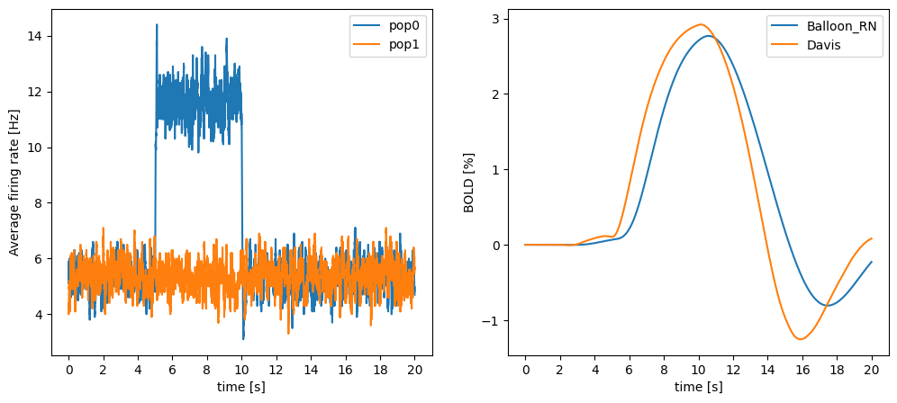

#!pip install ANNarchyRecording BOLD signals - Davis model


import numpy as np
import ANNarchy as ann
from ANNarchy.extensions.bold import *ANNarchy 4.8 (4.8.0) on darwin (posix).Davis model
Let’s now demonstrate how to define a custom BOLD model. The default Ballon model is defined by the following code:
balloon_RN = BoldModel(
parameters = """
phi = 1.0 ; kappa = 1/1.54
gamma = 1/2.46 ; E_0 = 0.34
tau = 0.98 ; alpha = 0.33
V_0 = 0.02 ; v_0 = 40.3
TE = 40/1000. ; epsilon = 1.43
r_0 = 25. ; second = 1000.0
""",
equations = """
# CBF input
I_CBF = sum(I_CBF)
ds/dt = (phi * I_CBF - kappa * s - gamma * (f_in - 1))/second
df_in/dt = s / second : init=1, min=0.01
# Balloon model
E = 1 - (1 - E_0)**(1 / f_in) : init=0.3424
dq/dt = (f_in * E / E_0 - (q / v) * f_out)/(tau*second) : init=1, min=0.01
dv/dt = (f_in - f_out)/(tau*second) : init=1, min=0.01
f_out = v**(1 / alpha) : init=1, min=0.01
# Revised coefficients
k_1 = 4.3 * v_0 * E_0 * TE
k_2 = epsilon * r_0 * E_0 * TE
k_3 = 1.0 - epsilon
# Non-linear BOLD equation
BOLD = V_0 * (k_1 * (1 - q) + k_2 * (1 - (q / v)) + k_3 * (1 - v))
""",
inputs=['I_CBF']
)It is very similar to the interface of a Neuron model, with parameters and equations defined in two multi-line strings. The input signal I_CBF has to be explicitly defined in the inputs argument to help the BOLD monitor create the mapping.
To demonstrate how to create a custom BOLD model, let’s suppose we want a model that computes both the BOLD signal of the Balloon model and the one of the Davis model:
Davis, T. L., Kwong, K. K., Weisskoff, R. M., and Rosen, B. R. (1998). Calibrated functional MRI: mapping the dynamics of oxidative metabolism. Proceedings of the National Academy of Sciences 95, 1834–1839
Without going into too many details, the Davis model computes the BOLD signal directly using f_in and E, without introducing a differential equation for the BOLD signal. Its implementation using the BOLD model would be:
DavisModel = BoldModel(
parameters = """
second = 1000.0
phi = 1.0 # Friston et al. (2000)
kappa = 1/1.54
gamma = 1/2.46
E_0 = 0.34
M = 0.149 # Griffeth & Buxton (2011)
alpha = 0.14
beta = 0.91
""",
equations = """
# CBF-driving input as in Friston et al. (2000)
I_CBF = sum(I_CBF) : init=0
ds/dt = (phi * I_CBF - kappa * s - gamma * (f_in - 1))/second : init=0
df_in/dt = s / second : init=1, min=0.01
# Using part of the Balloon model to calculate r (normalized CMRO2) as in Buxton et al. (2004)
E = 1 - (1 - E_0)**(1 / f_in) : init=0.34
r = f_in * E / E_0
# Davis model
BOLD = M * (1 - f_in**alpha * (r / f_in)**beta) : init=0
""",
inputs=['I_CBF']
)Note that we could simply define two BOLD monitors using different models, but let’s create a complex model that does both for the sake of demonstration.
Let’s first redefine the populations of the previous section:
# Two populations of 100 izhikevich neurons
pop0 = ann.Population(100, neuron=ann.Izhikevich)
pop1 = ann.Population(100, neuron=ann.Izhikevich)
# Set noise to create some baseline activity
pop0.noise = 5.0; pop1.noise = 5.0
# Compute mean firing rate in Hz on 100ms window
pop0.compute_firing_rate(window=100.0)
pop1.compute_firing_rate(window=100.0)
# Create required monitors
mon_pop0 = ann.Monitor(pop0, ["r"], start=False)
mon_pop1 = ann.Monitor(pop1, ["r"], start=False)We can now create a hybrid model computing both the Balloon RN model of Stephan et al. (2007) and the Davis model:
balloon_Davis = BoldModel(
parameters = """
phi = 1.0 ; kappa = 1/1.54
gamma = 1/2.46 ; E_0 = 0.34
tau = 0.98 ; alpha = 0.33
V_0 = 0.02 ; v_0 = 40.3
TE = 40/1000. ; epsilon = 1.43
r_0 = 25. ; second = 1000.0
M = 0.062 ; alpha2 = 0.14
beta = 0.91
""",
equations = """
# CBF input
I_CBF = sum(I_CBF)
ds/dt = (phi * I_CBF - kappa * s - gamma * (f_in - 1))/second
df_in/dt = s / second : init=1, min=0.01
# Balloon model
E = 1 - (1 - E_0)**(1 / f_in) : init=0.3424
dq/dt = (f_in * E / E_0 - (q / v) * f_out)/(tau*second) : init=1, min=0.01
dv/dt = (f_in - f_out)/(tau*second) : init=1, min=0.01
f_out = v**(1 / alpha) : init=1, min=0.01
# Revised coefficients
k_1 = 4.3 * v_0 * E_0 * TE
k_2 = epsilon * r_0 * E_0 * TE
k_3 = 1.0 - epsilon
# Non-linear BOLD equation
BOLD = V_0 * (k_1 * (1 - q) + k_2 * (1 - (q / v)) + k_3 * (1 - v))
# Davis model
r = f_in * E / E_0 : init=1, min=0.01
BOLD_Davis = M * (1 - f_in**alpha2 * (r / f_in)**beta)
""",
inputs=['I_CBF']
)We now only need to pass that new object to the BOLD monitor, and specify that we want to record both BOLD and BOLD_Davis:
m_bold = BoldMonitor(
populations = [pop0, pop1],
bold_model = balloon_Davis,
mapping={'I_CBF': 'r'},
normalize_input=2000,
recorded_variables=["I_CBF", "BOLD", "BOLD_Davis"]
)
ann.compile()Compiling ... OK We run the same simulation protocol and compare the two BOLD signals. Note that the value of M has been modified to give a similar amplitude to both signals:
# Ramp up time
ann.simulate(1000)
# Start recording
mon_pop0.start()
mon_pop1.start()
m_bold.start()
# we manipulate the noise for the half of the neurons
ann.simulate(5000) # 5s with low noise
pop0.noise = 7.5
ann.simulate(5000) # 5s with higher noise (one population)
pop0.noise = 5
ann.simulate(10000) # 10s with low noise
# retrieve the recordings
mean_fr1 = np.mean(mon_pop0.get("r"), axis=1)
mean_fr2 = np.mean(mon_pop1.get("r"), axis=1)
If_data = m_bold.get("I_CBF")
bold_data = m_bold.get("BOLD")
davis_data = m_bold.get("BOLD_Davis")import matplotlib.pyplot as plt
plt.figure(figsize=(12, 5))
# mean firing rate
ax1 = plt.subplot(121)
ax1.plot(mean_fr1, label="pop0")
ax1.plot(mean_fr2, label="pop1")
plt.legend()
ax1.set_ylabel("Average firing rate [Hz]")
# BOLD input signal as percent
ax2 = plt.subplot(122)
ax2.plot(bold_data*100.0, label="Balloon_RN")
ax2.plot(davis_data*100.0, label="Davis")
plt.legend()
ax2.set_ylabel("BOLD [%]")
# x-axis labels as seconds
for ax in [ax1, ax2]:
ax.set_xticks(np.arange(0,21,2)*1000)
ax.set_xticklabels(np.arange(0,21,2))
ax.set_xlabel("time [s]")
plt.show()